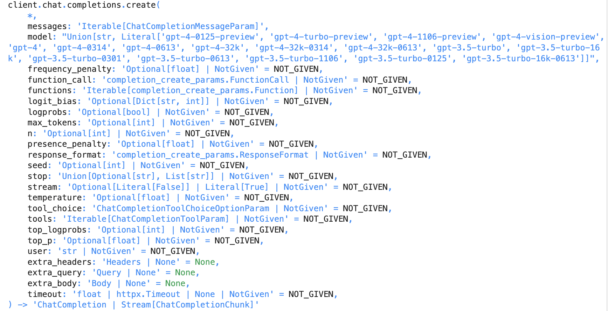
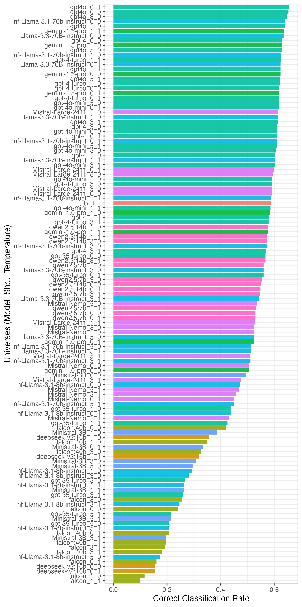
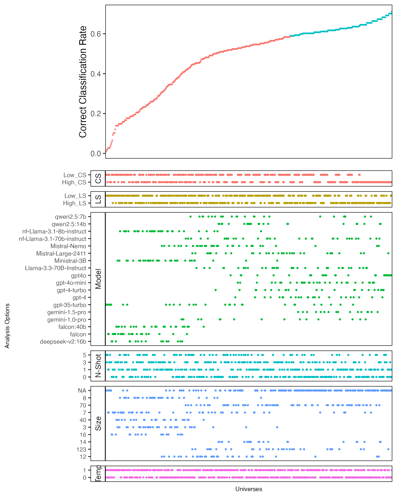
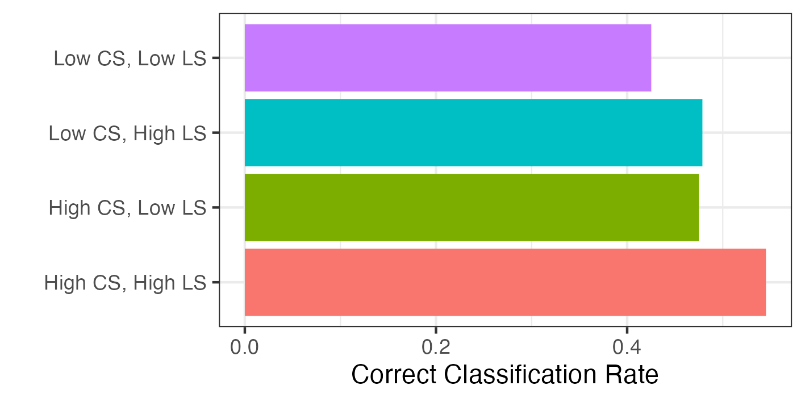
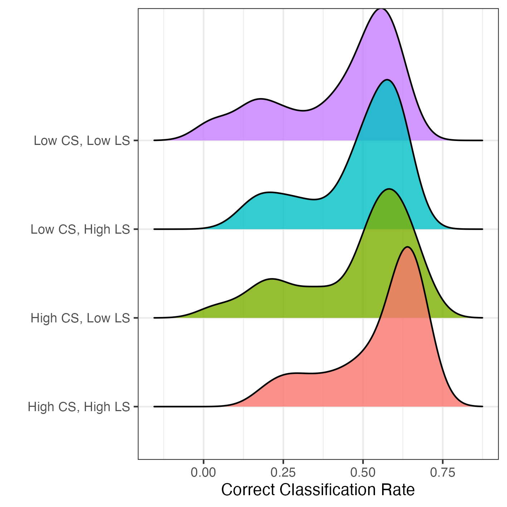
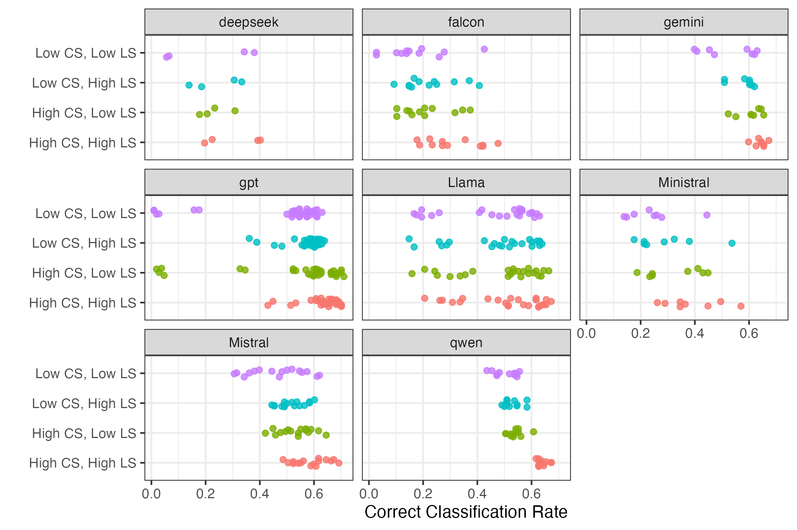
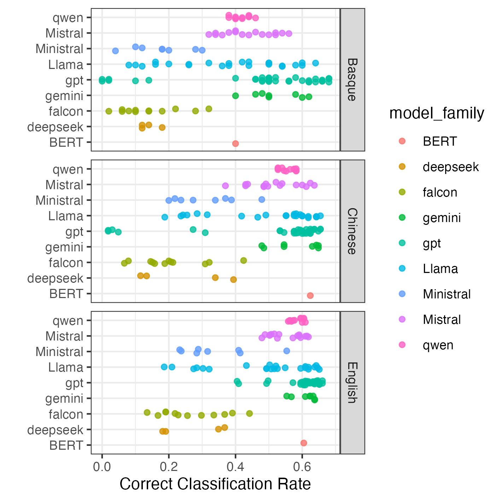
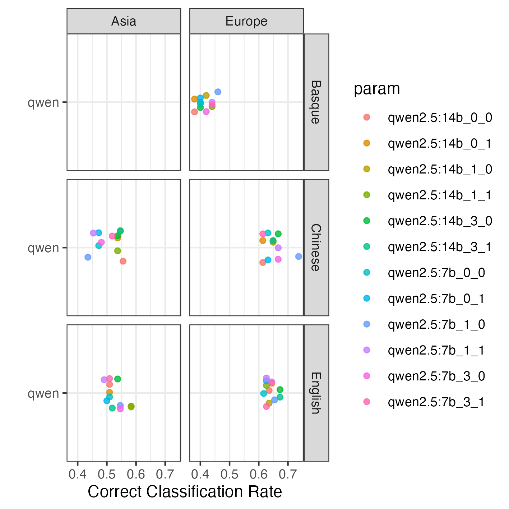
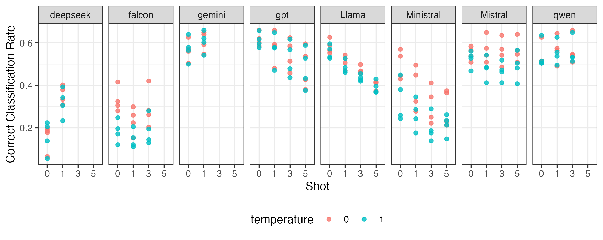
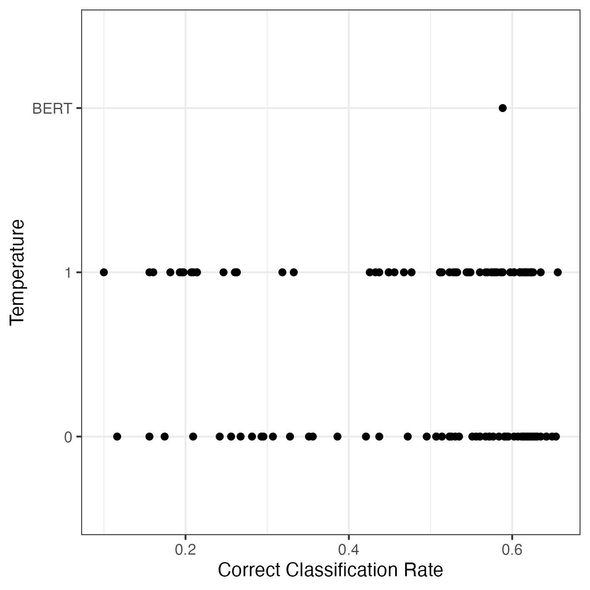

Data Science Seminar
Multiverse Analysis of Linguistic and Contextual Bias in
Large Language Models
Justin Chun-ting Ho
Amsterdam School of Communication ResearchIn collaboration with Chung-hong Chan (GESIS)
Slides: http://bit.ly/DSC_slides
Generative AI Infrastructure Early Users Scheme!
(Baden et al., 2022)
Indo-European Languages

Democracy Index

GDP per Capita

- Texts encode both linguistic and societal information
- They can affect the performance of language models
- Linguistic bias:
Discrepancy in performance across languages - Contextual bias:
Discrepancy in performance across materials produced in different social contexts
What about ChatGPT?
(and other LLMs)
How Multilingual are multilingual LLMs?
- 65 out of the 95 languages supported by ChatGPT are Indo-European languages
- Most texts in Red Pajama 2 are English: 14.5 billion out of 20.8 billion. All are Indo-European languages
- Over 40% documents of Common Crawl are English
Multiverse Analysis
why Multiverse Analysis?
why Multiverse Analysis?
 (Source: Sarma A et al. (2021). “multiverse: Multiplexing Alternative Data Analyses in R Notebooks (Version 0.6.1).” OSF Preprints. https://github.com/MUCollective/multiverse.)
(Source: Sarma A et al. (2021). “multiverse: Multiplexing Alternative Data Analyses in R Notebooks (Version 0.6.1).” OSF Preprints. https://github.com/MUCollective/multiverse.)
Methodology
- Data: Parliamentary texts from UK, Basque, HK, Taiwan
- Task: Predict policy area based on Comparative Agendas Project
- Synthetic data pairs to test LS and CS
Synthetic Data Pairs
| High LS (Indo-European) |
Low LS (Non-Indo-European) |
|
| High CS (European) |
UK (English), Basque (English) |
UK (Chinese), Basque (Basque) |
| Low CS (Non-European) |
HK (English), Taiwan (English) |
HK (Chinese), Taiwan (Chinese) |
Multiverse Analysis
| Multiverse elements | Options | n options |
|---|---|---|
| LLM Model (Size) |
|
18 |
| Temperature | 0, 1 | 2 |
| Setup | Zero-shot, One-shot, Three-shot, Five-shot | 4 |
What is the best performing combination of options
Multiverses
Specification Curve
Do Linguistic and Contextual Similarity matter?
Case Type
Case Type
Which model should I use?
Case Type by Model
Influence of Language?
Language
More about Regional LLM
Qwen
Does Example Help?
N-Shot
What about temperature?
Temperature
Takeaways
- Language matters
- Context matters
- Models err in (more or less) the same way
- But they also behave very differently
- Choose your model wisely
Next Steps
- More languages
- More countries
- More tasks